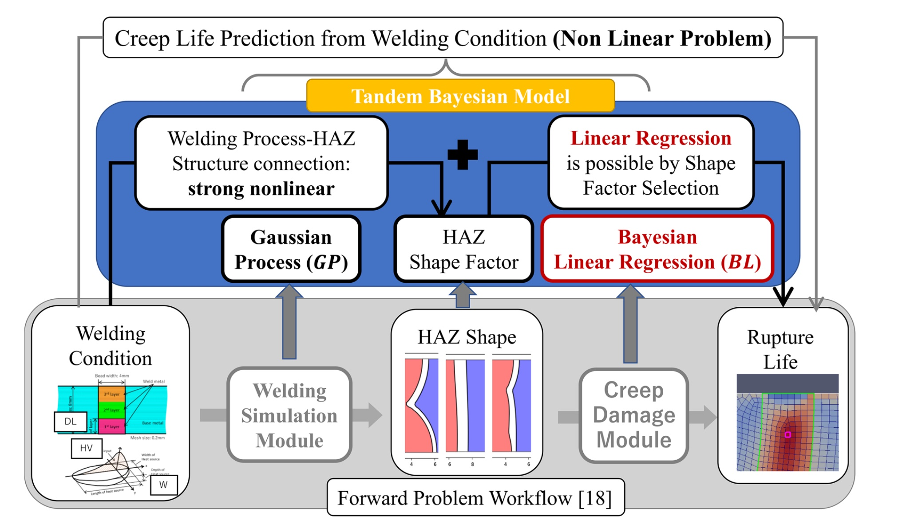
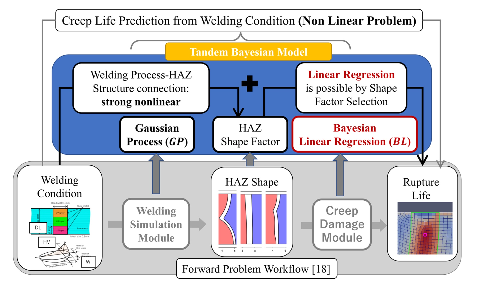

解釈可能AIを用いたデータ駆動理学に興味のある大学院生（修士・博士課程）を募集します。研究対象は物理学、情報科学や社会科学等の森羅万象あらゆる分野に存在する複雑現象（パターンダイナミクス）です。研究室を見学したい方は、お気軽にy.mototake_at_r.hit-u.ac.jpまでご連絡ください。なお、博士課程は2025年より開設されます。 入試情報
 Hitoshi IZUNO, Masahiko Demura, Masayoshi Yamazaki, Satoshi Minamoto, Junya Sakurai, Kenji Nagata, Yoh-ichi Mototake, Daisuke Abe, Keisuke Torigata, "Search for high-creep-strength welding conditions considering HAZ shape factors for 2 1/4Cr-1Mo steel," Welding in the World, (2024).

Hitoshi IZUNO, Masahiko Demura, Masayoshi Yamazaki, Satoshi Minamoto, Junya Sakurai, Kenji Nagata, Yoh-ichi Mototake, Daisuke Abe, Keisuke Torigata, "Search for high-creep-strength welding conditions considering HAZ shape factors for 2 1/4Cr-1Mo steel," Welding in the World, (2024).
